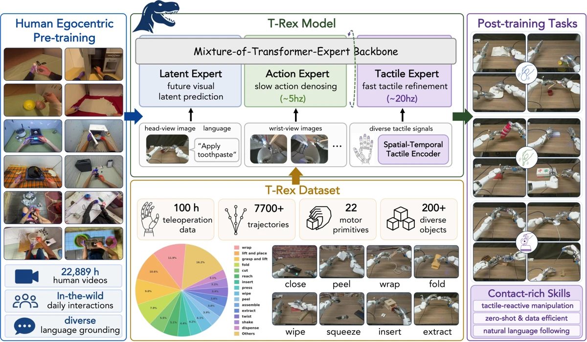
Yuqi Xie | 谢雨齐
I am a Member of Technical Staff at OpenAI. My research focuses on robot learning, dexterous manipulation, and embodied agents.
Previously, I was a Research Engineer at NVIDIA GEAR Lab, working with Jim Fan and Yuke Zhu.
I received my M.S. in Computer Science from UT Austin, advised by Yuke Zhu in the Robot Perception and Learning Lab. I hold bachelor’s degrees in Computer Science from the University of Michigan and Electrical and Computer Engineering from Shanghai Jiao Tong University.
My Pokémon shelf 0 / 60
Publications
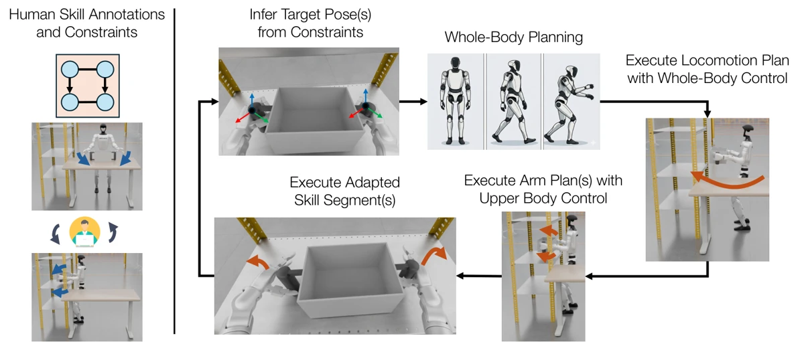
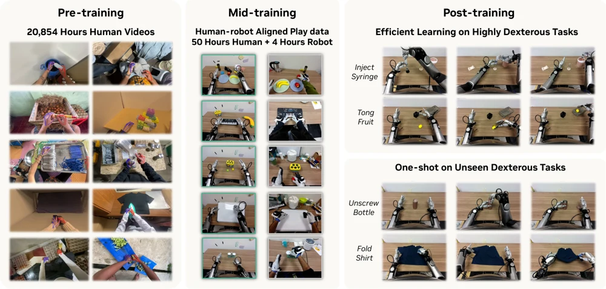
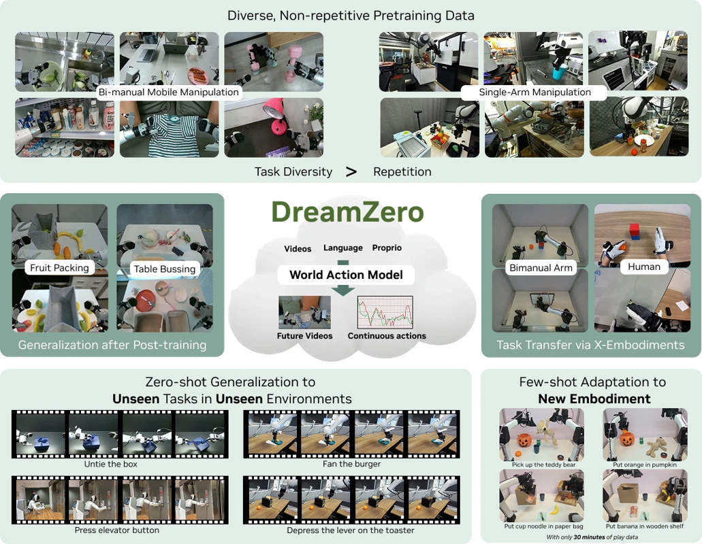
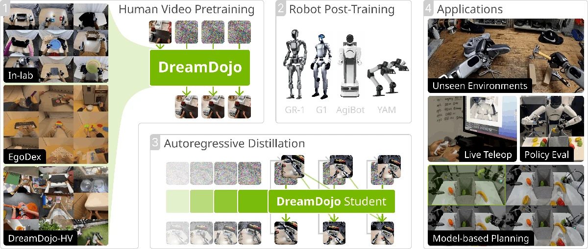
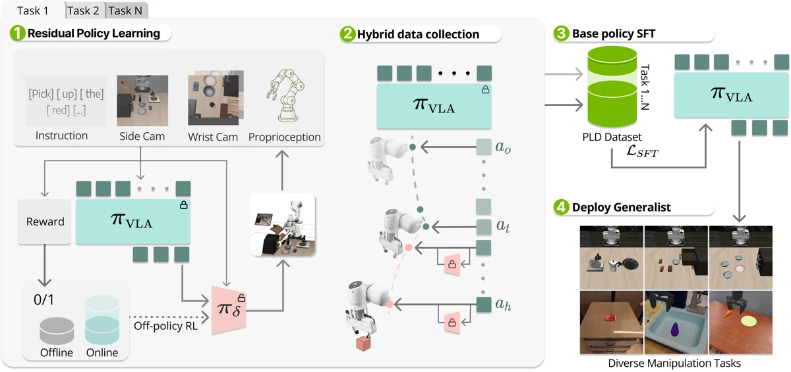
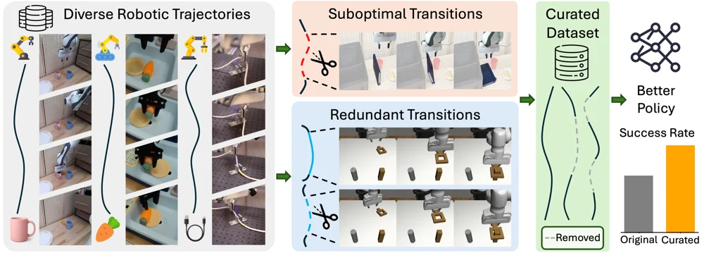
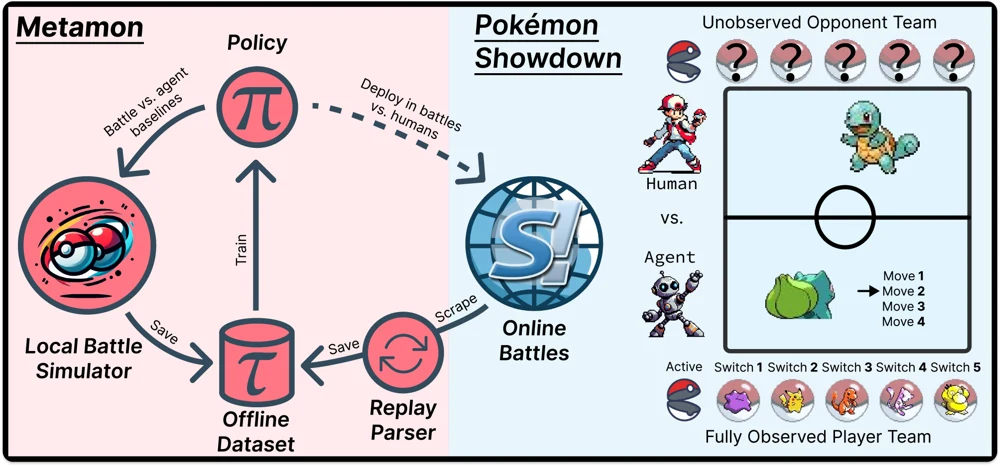
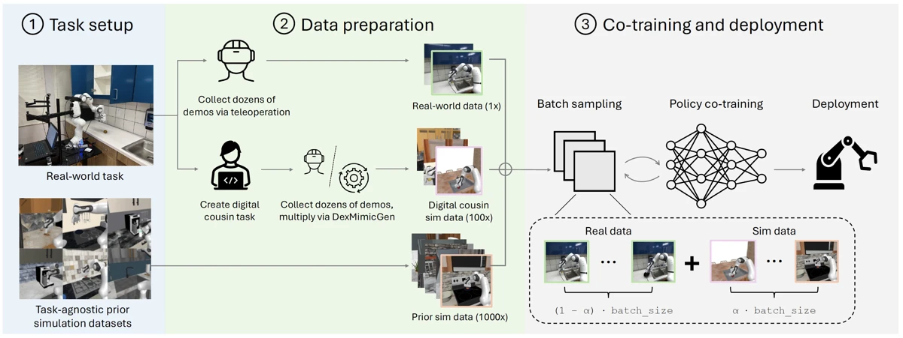
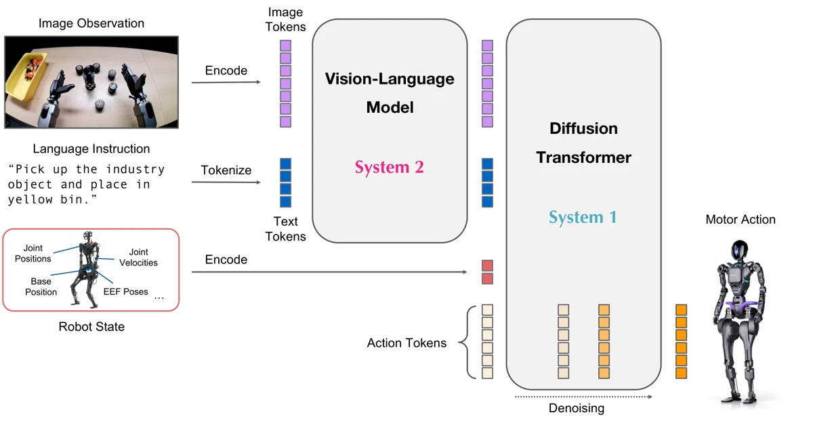
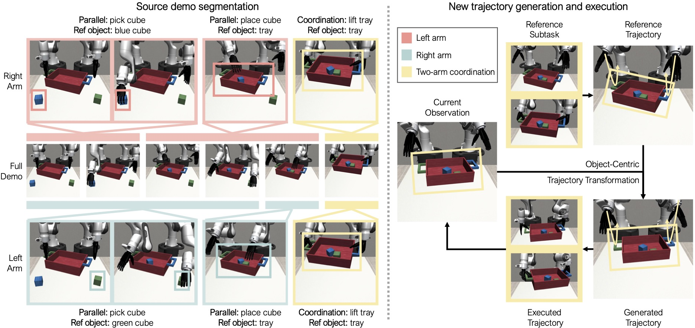
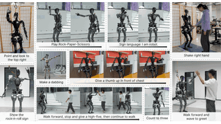
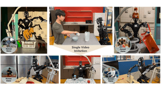
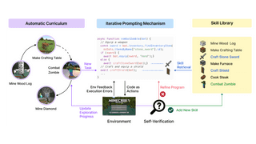
* Equal contribution.